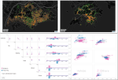
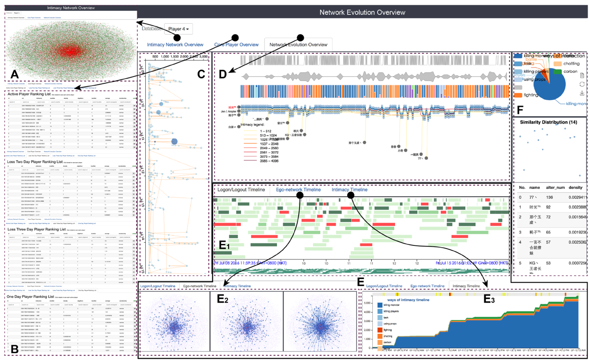
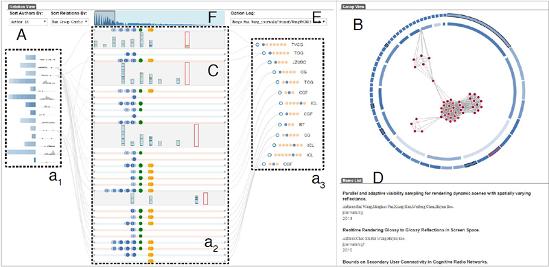
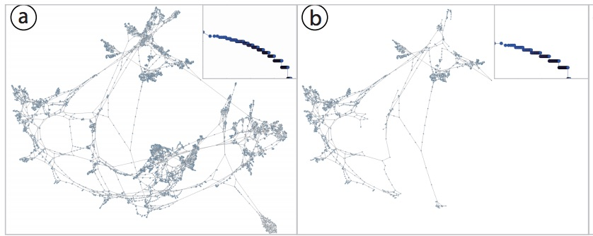
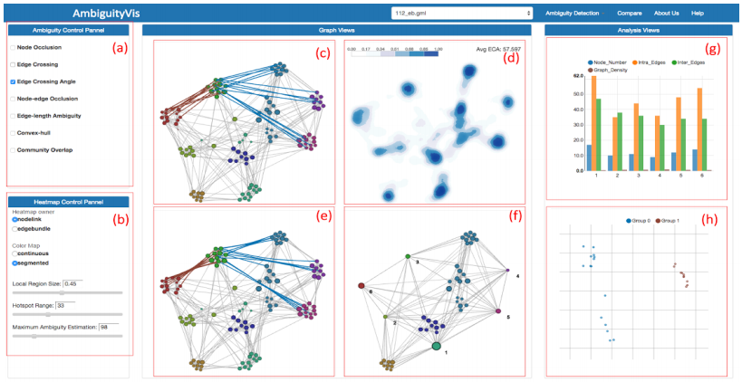
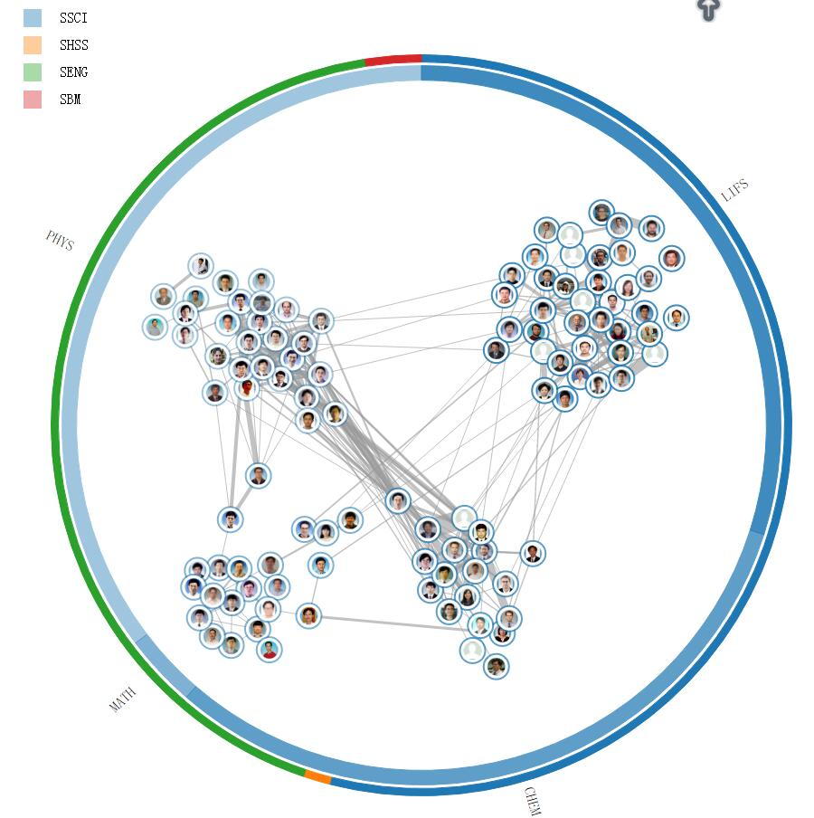
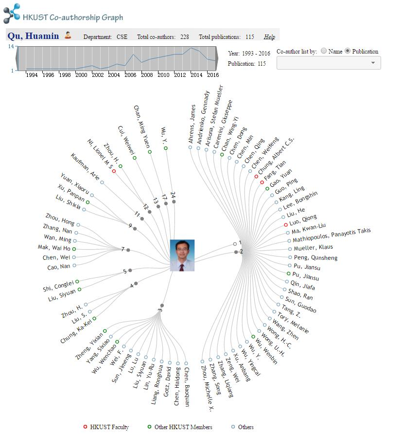

I am a Ph.D. student at VisLab, Department of Computer Science and Engineering, Hong Kong University of Science and Technology. My supervisor is Prof. Huamin Qu. I got my bachelor and master degree at College of Computer Science, Sichuan University in June 2012, under the supervision of Prof. Min Zhu.
My research interests include Information Visualization, Graph Visualization, and Urban visualization
Email:joyshen06@gmail.com; Phone: +852 51069930

StreetVizor: Visual Exploration of Human-Scale Urban Forms Based on Street Views
IEEE Transactions on Visualization and Computer Graphics (Proceedings of IEEE SciVis2017)
Download: [pdf]

A Visual Analytics Approach for Understanding Egocentric Intimacy Network Evolution and Impact Propagation in MMORPGs.
IEEE Pacific Visualization Symposium.
Download: [pdf]

NameClarifier: A Visual Analytics System for Author Name Disambiguation.
IEEE Transcactions on Visualization and Computer Graphics (Proceedings of VAST 2016).
Download: [pdf]

Evaluation of Graph Sampling: A Visualization Perspective.
IEEE Transcactions on Visualization and Computer Graphics (Proceedings of infoVis 2016).
Download: [pdf]

AmbiguityVis: Visualization of Ambiguity in Graph Layouts.
IEEE Transcactions on Visualization and Computer Graphics (Proceedings of infoVis 2015).
Download: [pdf]]
| Feb. 2016 - now | The Hong Kong University of Science and Technology, Hong Kong |
| Ph.D in Computer Science | |
| Dec. 2014 - Feb. 2016 | The Hong Kong University of Science and Technology, Hong Kong |
| Research Assistant | |
| Jun. 2014 - Nov. 2014 | The Hong Kong University of Science and Technology, Hong Kong |
| Visiting Internship Student | |
| Sept. 2012 - Jun. 2015 | Sichuan University, Chengdu, Sichuan, China |
| Master Degree in Computer Science and Technology | |
| 2012 | Visualization Summer School of Peiking University, Beijing, China |
| Student | |
| Sept. 2008 - Jun. 2012 | Sichuan University, Chengdu, Sichuan, China |
| Bachelor Degree of Computer Science and technology |
| 2013 | Outstanding Postgraduate of Sichuan University. |
| 2012 | Outstanding Graduate of Sichuan Province |
| 2012 | 100 Outstanding Student of Sichuan University |
| 2012 | ZhiSheng Scholarship |
| 2011 | First Price, 2011 Amway Cup Undergranduate IT Project Contest in Sichuan Province |
| 2009 | First Price, 2011 Amway Cup Undergranduate IT Project Contest in Sichuan Province |
| Oct. 2016 | NameClarifier: A Visual Analytics System for Author Name Disambiguation. |
| IEEE VIS Conference, Baltimore, USA |

HKUST CSE Collaboration
This is a project to visualize the collaboration of professors in Hong Kong University of Science and technology.
Visit: [Link]

Coauthor Graph
Tis is a project to visualize the coauthor graph of professors in Hong Kong University of Science during any time interval.
Visit: [Link]